Vous voulez apprendre à jouer aux échecs ? Vous êtes au bon endroit. Les échecs sont un jeu passionnant, accessible à tous, et dont les règles s'apprennent en moins d'une heure.
Je suis Nicolas Musicki, professeur d'échecs depuis 3 ans à Paris et Versailles. J'ai initié une vingtaine de débutants complets, des enfants de 5 ans aux adultes de 60 ans. Et je vous assure : les règles ne sont pas compliquées. Il suffit de les aborder dans le bon ordre.
Dans ce guide, je vous explique toutes les règles officielles du jeu d'échecs, de la mise en place de l'échiquier jusqu'aux règles spéciales (roque, prise en passant, promotion). Chaque déplacement et chaque règle est accompagné d'un diagramme, et vous pouvez recevoir l'ensemble en PDF gratuit pour l'avoir sous la main pendant vos premières parties.
1. L'échiquier et la position de départ
L'échiquier : 64 cases, 8 colonnes, 8 rangées
L'échiquier est un plateau carré composé de 64 cases alternativement claires et foncées. Il se compose de 8 colonnes (de a à h, de gauche à droite pour les Blancs) et 8 rangées (de 1 à 8, du bas vers le haut pour les Blancs).
Règle d'or pour placer l'échiquier
La case en bas à droite doit toujours être une case claire (blanche). C'est la première chose à vérifier avant de commencer une partie. Retenez : « blanc à droite ».
Besoin d'un échiquier ? Découvrez notre sélection des meilleurs échiquiers pliables pour trouver le modèle qui vous convient.
La position initiale des pièces
Chaque joueur commence avec 16 pièces. Voici comment les placer (en partant du bord de l'échiquier vers le centre) :
Rangée 1 (première rangée des Blancs)
De gauche à droite : Tour – Cavalier – Fou – Dame – Roi – Fou – Cavalier – Tour
Astuce pour retenir : la Dame se place toujours sur sa couleur. Dame blanche sur case blanche, Dame noire sur case noire.
Rangée 2 (deuxième rangée des Blancs)
Les 8 pions se placent sur toute la deuxième rangée, formant une ligne de défense devant les pièces.
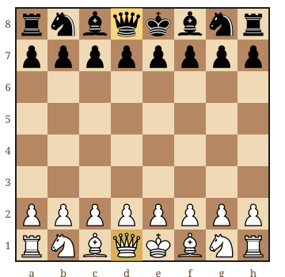
Le joueur avec les pièces noires place ses pièces de façon symétrique sur les rangées 7 (pions) et 8 (pièces).
Qui commence ?
Les Blancs jouent toujours en premier. Ensuite, chaque joueur joue un coup à tour de rôle. C'est une règle universelle aux échecs.
2. Le déplacement de chaque pièce
Chaque pièce d'échecs a son propre mode de déplacement. C'est la première chose à maîtriser. Voyons-les une par une, de la plus simple à la plus complexe.
La Tour
Déplacement de la Tour
La Tour se déplace en ligne droite, horizontalement ou verticalement, d'autant de cases qu'elle le souhaite. Elle ne peut pas sauter par-dessus d'autres pièces.
En pratique : la Tour est très puissante en fin de partie quand l'échiquier est dégagé. Elle contrôle toute une colonne ou toute une rangée.
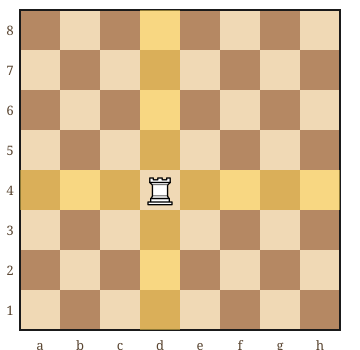
Le Fou
Déplacement du Fou
Le Fou se déplace en diagonale, d'autant de cases qu'il le souhaite. Il ne peut pas sauter par-dessus d'autres pièces.
Point important : un Fou reste toujours sur la même couleur de case. Vous avez un Fou de cases blanches et un Fou de cases noires. C'est pour cela qu'on dit que les deux Fous ensemble sont très forts : ils couvrent les deux couleurs.
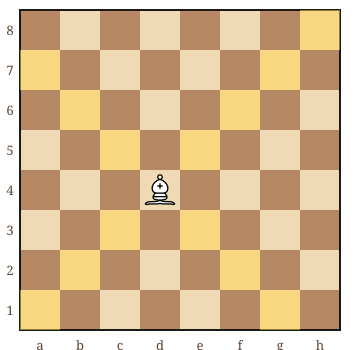
La Dame (ou Reine)
Déplacement de la Dame
La Dame est la pièce la plus puissante. Elle combine les mouvements de la Tour et du Fou : elle se déplace en ligne droite (horizontale, verticale) ET en diagonale, d'autant de cases qu'elle le souhaite.
Conseil : la Dame est précieuse. Évitez de la sortir trop tôt en début de partie, car elle peut être facilement attaquée et vous ferez perdre du temps à la protéger.
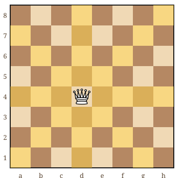
Le Roi
Déplacement du Roi
Le Roi se déplace d'une seule case dans n'importe quelle direction : horizontalement, verticalement ou en diagonale.
Règle fondamentale : le Roi ne peut jamais se placer sur une case contrôlée par une pièce adverse. Si votre Roi est attaqué (en « échec »), vous devez obligatoirement parer la menace.
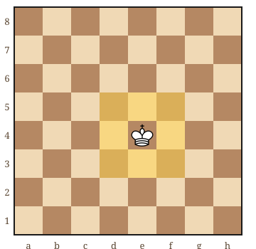
Le Cavalier
Déplacement du Cavalier
Le Cavalier a un déplacement unique : il se déplace en « L ». Concrètement : 2 cases dans une direction (horizontale ou verticale) puis 1 case perpendiculairement (ou inversement).
Particularité : le Cavalier est la seule pièce qui peut sauter par-dessus les autres pièces, qu'elles soient alliées ou adverses. C'est ce qui le rend si dangereux, surtout en position fermée.
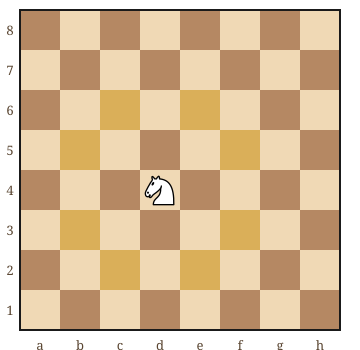
Le Pion
Déplacement du Pion
Le Pion est la pièce la plus nombreuse mais aussi la plus particulière :
- Avance d'une case vers l'avant (jamais en arrière !)
- Avance de deux cases depuis sa position de départ (premier coup uniquement)
- Capture en diagonale : le Pion prend les pièces adverses d'une case en diagonale vers l'avant
Important : le Pion est la seule pièce qui ne recule jamais et qui ne capture pas dans la même direction qu'il se déplace.
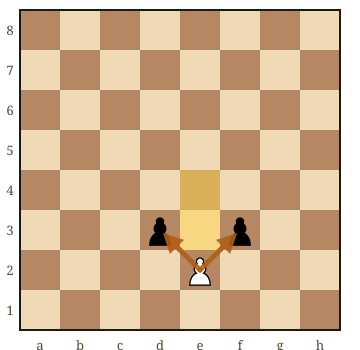
Comment capture-t-on une pièce ?
Pour capturer (ou « prendre ») une pièce adverse, il suffit de déplacer votre pièce sur la case occupée par la pièce adverse. Celle-ci est alors retirée du jeu et votre pièce prend sa place. On ne peut pas capturer ses propres pièces.
3. Les règles spéciales : roque, en passant, promotion
Les échecs comportent trois règles spéciales que les débutants oublient souvent. Elles sont pourtant essentielles et vous les utiliserez dans quasiment chaque partie.
Le Roque : mettre son Roi en sécurité
Le roque est un coup spécial qui implique le Roi et une Tour. C'est le seul moment du jeu où vous pouvez déplacer deux pièces en un seul coup.
Petit roque (côté Roi)
Le Roi se déplace de 2 cases vers la droite, et la Tour vient se placer juste à sa gauche. Le Roi passe de e1 à g1, la Tour de h1 à f1.
Notation : O-O
Grand roque (côté Dame)
Le Roi se déplace de 2 cases vers la gauche, et la Tour vient se placer juste à sa droite. Le Roi passe de e1 à c1, la Tour de a1 à d1.
Notation : O-O-O
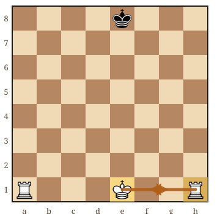
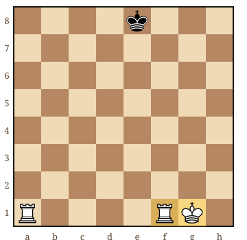
Conditions pour roquer
Le roque est possible uniquement si toutes ces conditions sont remplies :
- Le Roi n'a jamais bougé depuis le début de la partie
- La Tour concernée n'a jamais bougé
- Il n'y a aucune pièce entre le Roi et la Tour
- Le Roi n'est pas en échec au moment du roque
- Le Roi ne traverse pas une case contrôlée par une pièce adverse
- Le Roi ne termine pas sur une case contrôlée par une pièce adverse
Pourquoi roquer ?
Le roque est un coup essentiel en début de partie. Il permet de mettre votre Roi à l'abri dans un coin de l'échiquier, protégé par des pions, et d'activer votre Tour en la plaçant vers le centre. Roquez tôt ! C'est un conseil que je donne à tous mes élèves.
La prise en passant
C'est la règle la plus méconnue des échecs. La prise en passant concerne uniquement les pions.
Quand la prise en passant s'applique-t-elle ?
Situation : un de vos pions est sur la 5ème rangée (pour les Blancs) ou la 4ème rangée (pour les Noirs). Un pion adverse, depuis sa position de départ, avance de 2 cases et se retrouve juste à côté de votre pion.
Vous avez alors le droit, uniquement au coup suivant, de capturer ce pion « en passant » : votre pion se déplace en diagonale sur la case que le pion adverse a « sautée », et le pion adverse est retiré.
Attention : si vous ne jouez pas la prise en passant immédiatement (au coup suivant), vous perdez ce droit. C'est maintenant ou jamais !
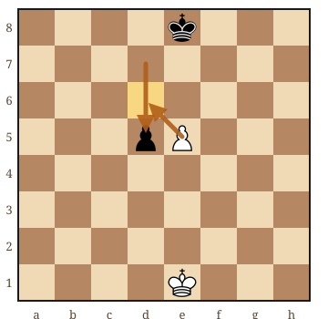
La promotion du pion
Quand un pion atteint la dernière rangée de l'échiquier (la 8ème pour les Blancs, la 1ère pour les Noirs), il est obligatoirement transformé en une autre pièce de son choix : Dame, Tour, Fou ou Cavalier.
La promotion en pratique
Dans 99% des cas, on choisit la Dame, car c'est la pièce la plus puissante. On parle alors de « faire Dame ».
Cas particulier : il arrive parfois qu'on préfère promouvoir en Cavalier (la « sous-promotion ») pour réaliser un échec immédiat que la Dame ne pourrait pas donner. C'est rare mais spectaculaire !
À noter : on peut avoir plusieurs Dames en même temps sur l'échiquier. Il n'y a pas de limite.
4. Échec, échec et mat, pat
Comprendre ces trois concepts est fondamental. C'est le cœur même du jeu d'échecs.
L'échec
Un Roi est en échec lorsqu'il est attaqué par une pièce adverse. Quand votre Roi est en échec, vous devez obligatoirement parer la menace. Il existe 3 façons de le faire :
1. Déplacer le Roi
Bougez votre Roi sur une case sûre, non contrôlée par l'adversaire.
2. Bloquer l'échec
Interposez une de vos pièces entre la pièce attaquante et votre Roi. (Impossible si l'attaquant est un Cavalier.)
3. Capturer la pièce attaquante
Prenez la pièce qui fait échec avec une de vos pièces (y compris le Roi lui-même, si la case est sûre).
Règle absolue
Vous ne pouvez jamais ignorer un échec. Si aucune des trois solutions n'est possible, c'est échec et mat : la partie est terminée.
L'échec et mat : la victoire
L'échec et mat (ou simplement « mat ») est l'objectif ultime aux échecs. Votre Roi est en échec et il n'existe aucun moyen d'y échapper : pas de fuite, pas de blocage, pas de capture possible.
La partie est gagnée !
Le joueur qui inflige l'échec et mat remporte la partie. Attention : on ne « prend » jamais le Roi aux échecs. Le jeu se termine dès que le mat est constaté.
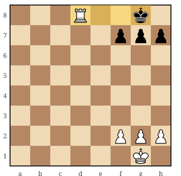
Le pat : ni victoire, ni défaite
Le pat est une situation où le joueur dont c'est le tour n'a aucun coup légal à jouer, mais son Roi n'est pas en échec. Résultat : la partie est nulle (match nul).
Piège classique
Le pat est le cauchemar du joueur qui a l'avantage. Imaginez : vous avez une Dame et un Roi contre un Roi seul. Si vous jouez mal, vous pouvez patter votre adversaire et perdre la victoire ! C'est une erreur très fréquente chez les débutants.
Astuce : quand vous dominez largement, laissez toujours au Roi adverse au moins une case pour bouger. Puis matez-le calmement.
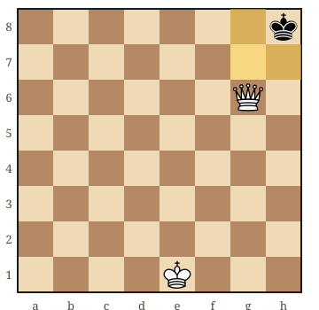
5. Les différentes façons de faire nulle
Une partie peut se terminer par un match nul (ou « nulle ») de plusieurs façons :
1. Le pat
Comme expliqué ci-dessus : aucun coup légal possible, mais pas d'échec.
2. Accord mutuel
Les deux joueurs peuvent proposer et accepter la nulle à tout moment. Cela arrive souvent quand la position est équilibrée et qu'aucun camp ne peut gagner.
3. Matériel insuffisant
La partie est nulle si aucun des deux joueurs n'a assez de pièces pour infliger un mat. Par exemple : Roi contre Roi, Roi + Fou contre Roi, ou Roi + Cavalier contre Roi.
4. Répétition de position (triple répétition)
Si la même position exacte apparaît 3 fois dans la partie (même placement, même tour de jeu, mêmes droits de roque), un joueur peut réclamer la nulle.
5. Règle des 50 coups
Si 50 coups consécutifs sont joués sans aucune prise et sans aucun mouvement de pion, un joueur peut réclamer la nulle.
6. La valeur des pièces
Toutes les pièces ne se valent pas. Connaître leur valeur relative est essentiel pour décider quand échanger et quand éviter un échange.
| Pièce | Valeur | Commentaire |
|---|---|---|
| Pion ♙ | 1 point | L'unité de base. Mais un pion bien placé peut valoir de l'or ! |
| Cavalier ♘ | 3 points | Excellent en position fermée. Peut sauter par-dessus les pièces. |
| Fou ♗ | 3 points | Fort en position ouverte. La paire de Fous est un avantage reconnu. |
| Tour ♖ | 5 points | Puissante sur les colonnes ouvertes et en finale. |
| Dame ♕ | 9 points | La pièce la plus forte. Perdre sa Dame est souvent fatal. |
| Roi ♔ | ∞ | Valeur infinie : si vous le perdez, la partie est finie ! |
Comment utiliser ces valeurs ?
Ces valeurs servent de guide pour les échanges. Échanger un Fou (3 pts) contre une Tour (5 pts) est un bon échange. Donner une Tour pour un Pion est une mauvaise affaire. Mais attention : la position compte aussi. Un Cavalier bien centralisé peut valoir plus qu'une Tour coincée dans un coin.
7. La notation des coups
La notation algébrique est le système utilisé pour écrire les coups d'échecs. Pas besoin de la maîtriser pour jouer, mais c'est utile pour suivre des parties ou noter les vôtres.
Les bases de la notation
- R = Roi, D = Dame, T = Tour, F = Fou, C = Cavalier
- Les pions ne sont pas notés par une lettre (on écrit juste la case d'arrivée)
- x = capture (ex : Fxe5 = le Fou capture en e5)
- + = échec (ex : Dd7+ = la Dame va en d7 avec échec)
- # = échec et mat (ex : Dh7# = mat en h7)
- O-O = petit roque, O-O-O = grand roque
- e4 = un pion va en e4
Exemples concrets
- 1. e4 e5 = Les Blancs avancent le pion en e4, les Noirs répondent e5
- 2. Cf3 = Le Cavalier blanc va en f3
- 3. Fc4 = Le Fou blanc va en c4
- 4. O-O = Les Blancs font le petit roque
8. 5 conseils pour bien commencer
Maintenant que vous connaissez les règles, voici 5 conseils essentiels pour jouer vos premières parties avec confiance.
Contrôlez le centre
Les cases e4, d4, e5, d5 sont les cases centrales de l'échiquier. Les contrôler avec vos pions et vos pièces vous donne plus d'espace et de possibilités. Commencez par 1. e4 ou 1. d4. Pour savoir quoi jouer ensuite, voyez les 5 ouvertures pour débutants, illustrées.
Développez vos pièces
Sortez rapidement vos Cavaliers et vos Fous vers des cases actives. Ne bougez pas la même pièce deux fois en ouverture. L'objectif : avoir toutes vos pièces en jeu le plus vite possible.
Roquez tôt
Mettez votre Roi en sécurité dans les 10 premiers coups. Le roque protège votre Roi et active votre Tour. C'est l'un des meilleurs réflexes à prendre.
Ne sortez pas la Dame trop tôt
La Dame est tentante car elle est puissante, mais en la sortant trop tôt, elle sera attaquée par les pièces mineures adverses et vous perdrez des temps pour la repositionner. Patientez !
Réfléchissez avant de jouer
Avant chaque coup, posez-vous la question : « Que menace mon adversaire ? » Vérifiez que votre coup ne laisse pas de pièce en prise. Cette simple habitude élimine la majorité des erreurs de débutant.
Pour aller plus loin : découvrez les 10 erreurs de débutant les plus courantes.
9. Questions fréquentes
Peut-on prendre le Roi aux échecs ?
Non, jamais. Le Roi n'est jamais réellement capturé. La partie se termine quand le Roi est en échec et mat, c'est-à-dire quand il est attaqué et qu'aucun coup ne peut le sauver. C'est une différence fondamentale avec les autres jeux de plateau.
Peut-on roquer si on a déjà été en échec ?
Oui, à condition de n'avoir pas déplacé le Roi pour parer l'échec. Si vous avez bloqué l'échec ou capturé la pièce attaquante sans bouger le Roi, le roque reste possible. En revanche, si le Roi a bougé (même pour y revenir), le roque est définitivement interdit.
Un pion peut-il prendre en arrière ?
Non. Le pion est la seule pièce qui ne peut jamais reculer. Il avance toujours vers l'avant et capture en diagonale vers l'avant. C'est ce qui rend chaque avancée de pion irréversible et stratégiquement importante.
Peut-on avoir deux Dames ?
Oui ! Chaque pion qui atteint la dernière rangée peut être promu en Dame. En théorie, vous pourriez avoir jusqu'à 9 Dames (la Dame originale + 8 pions promus). En pratique, avoir 2 Dames est déjà assez pour gagner.
À quel âge peut-on apprendre les échecs ?
Les enfants peuvent apprendre les règles dès 5-6 ans. Avec une approche ludique et adaptée, ils progressent très vite. Pour en savoir plus, lisez notre guide : Comment apprendre les échecs à un enfant ?
Où jouer aux échecs en ligne gratuitement ?
Les deux meilleures plateformes gratuites sont Lichess.org (100% gratuit et open source) et Chess.com (gratuit avec options premium). Vous pouvez y jouer contre d'autres humains ou contre l'ordinateur, à n'importe quel niveau.
Pour choisir entre les deux, régler la bonne cadence et éviter les pièges classiques des premières parties, suivez notre guide jouer aux échecs en ligne quand on débute.
Vous connaissez les règles ? Passez à l'étape suivante !
Maintenant que vous maîtrisez les règles, il est temps de progresser avec un professeur. Je propose un 1er cours offert et sans engagement pour évaluer votre niveau et définir vos objectifs.
Réserver mon cours offertArticles recommandés
Vous avez appris les règles ? Voici la suite logique de votre parcours :
Débuter aux Échecs : Le Guide Complet (0-500 Elo) Passez des règles à la stratégie : ouvertures, tactiques et plan de progression → 10 Erreurs de Débutant aux Échecs Évitez les pièges classiques dès vos premières parties → Apprendre les Échecs aux Enfants : la Méthode en 5 Étapes Pour transmettre ces règles à un enfant, une pièce à la fois →
Article rédigé par Nicolas Musicki, professeur d'échecs à Paris et Versailles
Retour à l'accueil |
Me contacter
Questions fréquentes
Peut-on prendre le Roi aux échecs ?
Non, jamais. Le Roi n'est jamais réellement capturé aux échecs : la partie se termine quand le Roi est en échec et mat, c'est-à-dire quand il est attaqué et qu'aucun coup ne peut le sauver. C'est une différence fondamentale avec les autres jeux de plateau.
Peut-on avoir deux Dames aux échecs ?
Oui. Chaque pion qui atteint la dernière rangée peut être promu en Dame. En théorie, un joueur pourrait avoir jusqu'à 9 Dames (la Dame originale plus 8 pions promus). En pratique, avoir 2 Dames suffit déjà largement pour gagner.
À quel âge peut-on apprendre les échecs ?
Les enfants peuvent apprendre les règles des échecs dès 5-6 ans. Avec une approche ludique et adaptée, ils progressent très vite. Les règles complètes s'apprennent en moins d'une heure, quel que soit l'âge.
Qu'est-ce que la prise en passant aux échecs ?
La prise en passant est une capture réservée aux pions. Quand un pion adverse avance de deux cases depuis sa position de départ et se retrouve juste à côté de l'un de vos pions, vous pouvez le capturer comme s'il n'avait avancé que d'une case : votre pion se place en diagonale sur la case qu'il a sautée. Cette prise doit être jouée immédiatement, au coup suivant, sinon le droit est perdu pour toujours.
Quelle est la différence entre échec et mat et pat ?
Dans les deux cas, le joueur au trait n'a aucun coup légal. La différence tient au roi : s'il est attaqué, c'est échec et mat et la partie est perdue ; s'il n'est pas attaqué, c'est un pat et la partie est nulle. Le pat est le piège classique du joueur qui a une dame contre un roi seul : il faut toujours laisser une case de fuite au roi adverse jusqu'au coup du mat.
Peut-on télécharger les règles des échecs en PDF ?
Oui. Le guide gratuit « Apprendre les Échecs — Volume 1 » (96 pages, PDF) reprend toutes les règles de cet article dans ses chapitres 2 à 5, avec un diagramme pour chaque pièce et chaque règle spéciale, puis des exercices corrigés. Il est envoyé par email depuis le formulaire de la page, sans engagement.